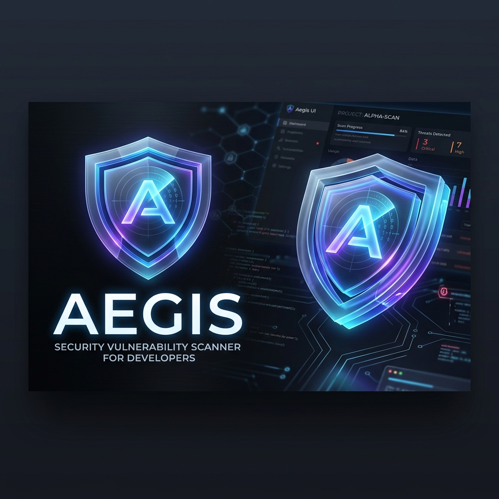

🛡️ Aegis
Plateforme moderne et unifiée pour le scan, le triage et la gestion des vulnérabilités de dépendances.
🚀 À propos
Aegis est un scanner de vulnérabilités ("vulnerability scanner") pensé pour les développeurs et les référents sécurité (AppSec). Conçu avec un design system ultra-premium (Glassmorphism, animations fluides, dark mode natif), Aegis consolide les résultats de multiples outils d'audit (npm audit, yarn audit, bun audit, composer audit) au sein d'une seule interface centralisée et agréable à utiliser.
Finies les lignes de terminal illisibles ! Avec Aegis, repérez instantanément les failles critiques et prenez des décisions rapides grâce au module de triage.
✨ Fonctionnalités Phares
- 🌐 Ingénierie Glocale : Scannez vos projets locaux (par chemin de dossier) ou ingérez les rapports de vulnérabilité distants poussés par vos pipelines CI/CD.
- 🔍 Module de Triage Centralisé : Passez en revue toutes vos CVEs dans une boîte de réception type "Inbox Zero". Marquez les failles comme
En attente,Confirmées(Urgent),Non affectées(Faux positif) ouIgnorées. - 📊 Tableaux de Bord & Rapports : Suivez l'historique de votre écosystème avec des graphiques évolutifs temporels (vue 1h, 1j, 7j, 30j...) et générez des rapports d'audit globaux sur tous vos projets en un clic.
- 🎨 Design UI/UX Premium : Interface construite en React + TailwindCSS exploitant massivement les effets de flou (backdrop-blur), les animations de layout fluides, et une typographie soignée pour une expérience utilisateur sans friction.
- 🤖 Bibliothèque de Prompts : Espace dédié pour stocker vos prompts IA d'aide à la remédiation de sécurité.
- 🔌 Intégration Jira (En Chantier) : Support natif prévu pour la génération automatisée de tickets Atlassian Jira directement depuis l'interface de triage des CVEs.
- 🔗 GitHub Advisory Data : Enrichissement automatique des données de failles via l'API GitHub Advisory.
🛠️ Stack Technique
- Moteur (Backend) : Bun (Hautes performances)
- Base de Données : SQLite (via
bun:sqlite- léger et natif) - Frontend : React 18, React Router, Recharts
- Style : TailwindCSS (Vanilla, architecture orientée Glassmorphism), Lucide React pour l'iconographie
⚙️ Installation & Démarrage
# 1. Cloner le projet (si applicable)
git clone https://github.com/votre-org/aegis.git
cd aegis
# 2. Installer les dépendances via Bun
bun install
# 3. Lancer le serveur de développement (Backend + Frontend)
bun dev
L'application sera accessible sur http://localhost:3000 (ou le port configuré). La base de données SQLite aegis.db sera créée automatiquement à la racine.
📡 Intégration CI (Ingest API)
Aegis permet de stocker les rapports de vulnérabilités générés par vos pipelines CI/CD (GitHub Actions, GitLab CI, Jenkins, etc.) pour les centraliser sur le dashboard.
Pour cela, envoyez la sortie standard (stdout) de votre outil d'audit (npm audit --json, etc.) à l'API d'ingestion en spécifiant le paramètre sha pour lier le rapport à un commit précis.
Exemple d'appel cURL :
curl -X POST "http://aegis-server/api/ingest/mon-projet-slug?sha=VOTRE_HASH_DE_COMMIT" \
-H "Content-Type: application/json" \
--data-binary @rapport-audit.json
Note : Le paramètre sha est primordial pour que les développeurs retrouvent la révision exacte du code liée aux vulnérabilités identifiées.
🔐 Philosophie
Aegis a été créé pour transformer l'analyse des dépendances — souvent vue comme une corvée génératrice de bruit — en une expérience visuelle, centralisée et engageante. Notre but : réduire la charge cognitive des ingénieurs sécurité.